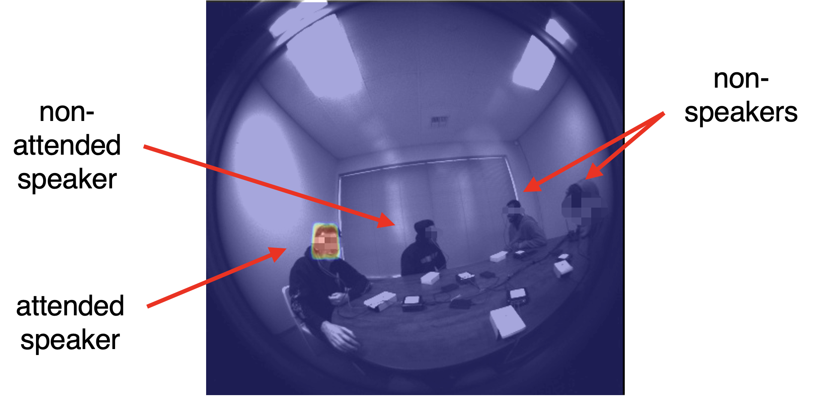
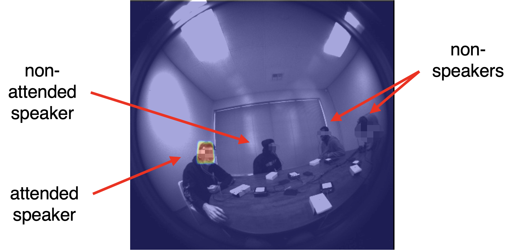

Egocentric Auditory Attention Localization in Conversations
CVPR 2023
Georgia Institute of Technology1, Meta Reality Labs Research2

|
Georgia Institute of Technology1, Meta Reality Labs Research2

|